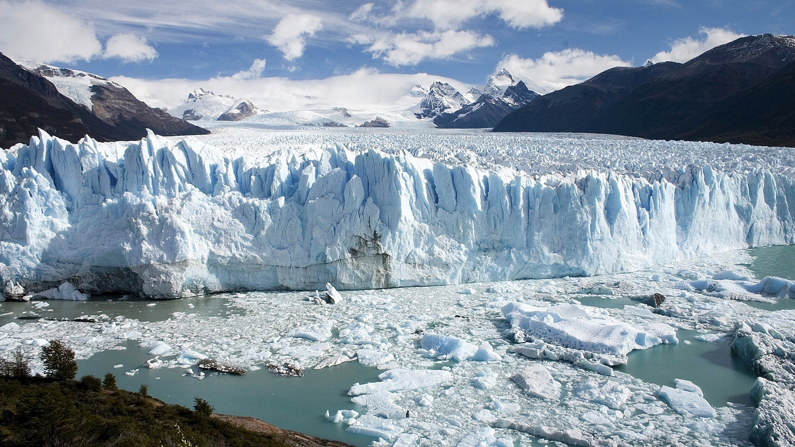

Glacier Perito Moreno

Located in the Los Glaciares National Park in the Santa Cruz Province of Argentina, the Perito Moreno Glacier is one of the most awe-inspiring natural wonders in the world. This massive glacier stretches over 30 kilometers (19 miles) in length and covers an area of approximately 250 square kilometers (97 square miles). Unlike most glaciers, which are retreating, the Perito Moreno Glacier is one of the few that is still advancing, making it a unique and fascinating destination.
The Perito Moreno Glacier is renowned for its striking blue ice, which is a result of the dense ice absorbing all colors of the spectrum except blue. Visitors can marvel at the glacier's towering ice walls, which rise up to 70 meters (230 feet) above the surface of Lake Argentino. The glacier's continuous movement causes spectacular ice calving events, where massive chunks of ice break off and crash into the lake with a thunderous roar, creating a mesmerizing display of nature's power.
One of the main attractions of the Perito Moreno Glacier is the network of walkways and viewing platforms that allow visitors to get up close and personal with this natural wonder. These walkways provide stunning panoramic views of the glacier and the surrounding Andes Mountains. For those seeking a more adventurous experience, guided ice trekking tours are available, offering the opportunity to walk on the glacier's surface and explore its crevasses and ice caves.
The Perito Moreno Glacier is also a haven for wildlife enthusiasts, with the surrounding area home to a variety of species, including Andean condors, guanacos, and foxes. Whether you're a nature lover, a photography enthusiast, or simply looking for an unforgettable experience, the Perito Moreno Glacier is a destination that will leave you in awe of nature's beauty and power.